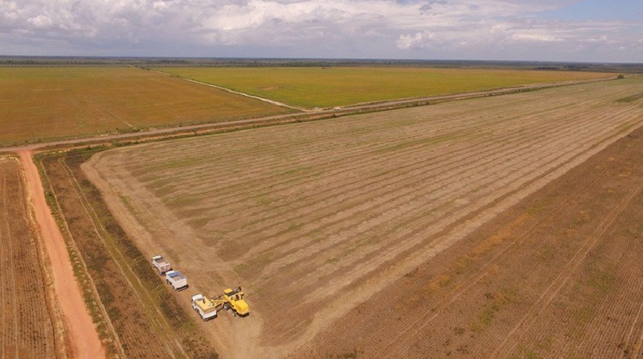
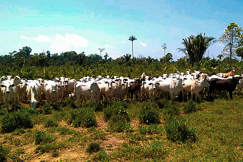
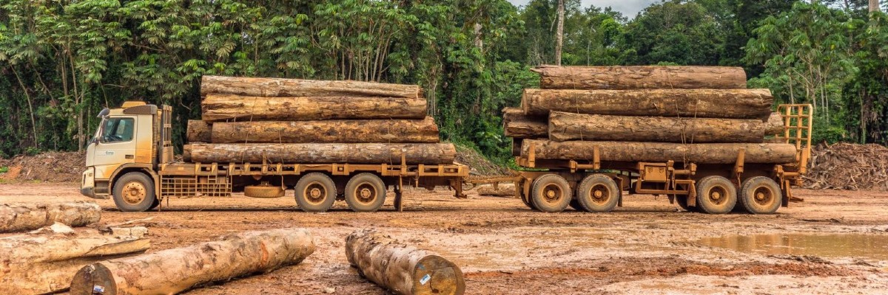
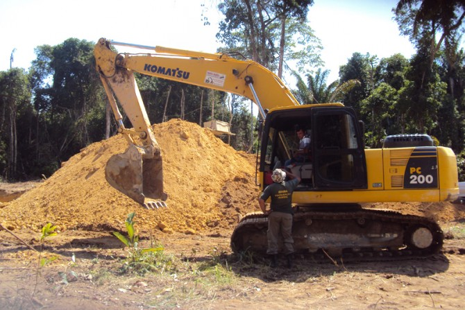
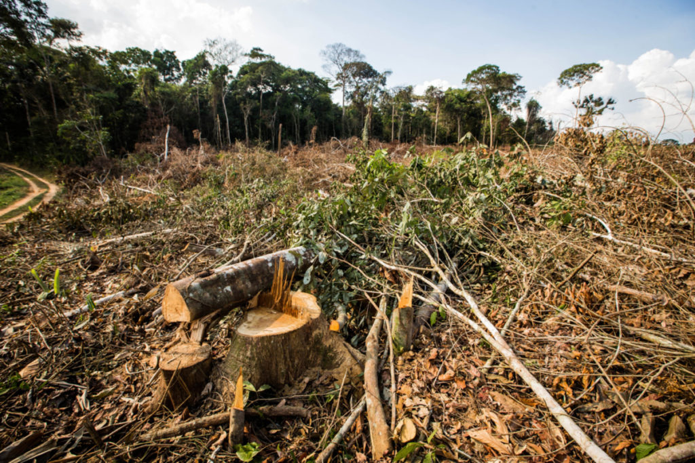

Causas do Desmatamento
O desmatamento ocorre por várias razões, incluindo:
Agricultura: O mesmo relatório da FAO afirma que a principal razão pela qual o desmatamento existe e ocorre, e em grande escala, é a agricultura comercial, que causou 40% do desmatamento tropical entre 2000 e 2010. Além disso, a agricultura de subsistência local foi responsável por 33%.

Pecuária: A criação de gado em larga escala também contribui para a destruição de florestas.

Exploração madeireira: A extração de madeira ilegal é uma atividade que leva ao desmatamento.

Mineração: A mineração em larga escala, especialmente a mineração ilegal, tem impactos devastadores nas florestas.

Infraestrutura: A construção de estradas, barragens e outros projetos de infraestrutura causa o desmatamento. Desenvolvimento urbano: O crescimento desordenado das cidades leva à destruição de áreas florestais.
